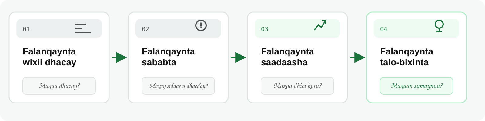
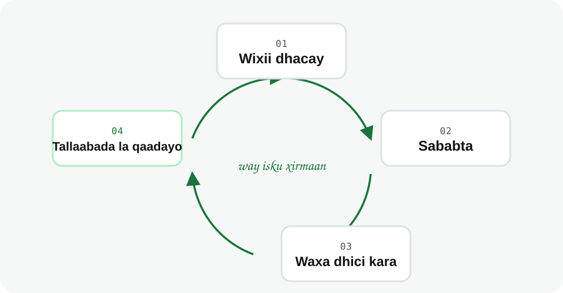

Noocyada Falanqaynta
Waxaad awoodi doontaa inaad kala saarto afarta nooc ee Falanqaynta (Analytics) iyo suʼaasha uu nooc walba ka jawaabo.
Dulmar
Maamule ayaa eegaya warbixinta iibka bishii hore, wuxuuna qabaa afar suʼaalood:
Suʼaal kasta waxay u baahan tahay nooc falanqayn ah oo ka duwan kuwa kale.
Waa maxay Falanqayn (Analytics)?
Falanqayn (Analytics) waa adeegsiga xogta si loo fahmo waxa dhacay, sababta ay u dhacday, waxa dhici kara marka xigta, ama tallaabada la qaadayo.

Afarta Nooc ee Falanqaynta
Bilowgu badanaa wuxuu ka bilaabmaa falanqaynta wixii dhacay, sida soo koobidda xogta, wadarta, iyo jaantusyada. Marka shaqadu sii horumarto, waxaa lagu daraa saadaal iyo talo-bixin.
Maxay Tani Muhiim u Tahay?
Afarta nooc badanaa way isku xirmaan, inkastoo aanay ahayn afar tallaabo oo mar kasta khasab ah. Ma sharxi kartid sababta iibka bariisku u kordhay ilaa aad marka hore ogaato inuu kordhay. Fahamka sababta uu bishii hore u kordhay wuxuu xoojin karaa saadaasha bisha xigta. Talo-bixintuna waxay noqotaa mid lagu kalsoonaan karo marka suʼaalihii hore ay bixiyeen caddayn.
Sidaas darteed, marka ay shirkadu rabto saadaal, suʼaasha ugu horreysa waa: ma si sax ah ayay u sharxi kartaa wixii hore u dhacay?
